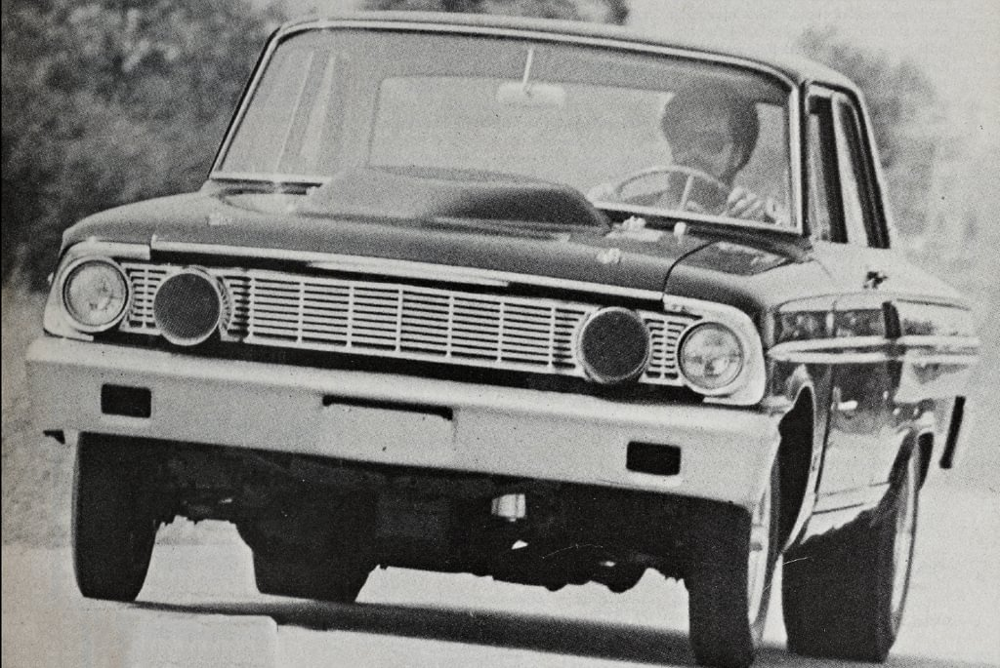
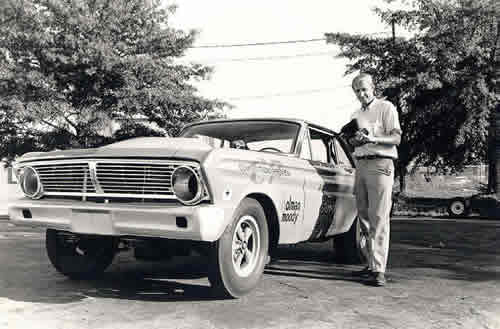

The A/FX (A/Factory Experimental) class was a turning point in drag racing history — and Ford was at the front of the revolution.
A/FX, short for A/Factory Experimental, was a class introduced in the early 1960s for factory-backed experimental drag racing cars. It allowed automakers like Ford, GM, and Chrysler to push the limits of performance with modified wheelbases, lightweight components, and powerful engines.
Ford entered the A/FX class with innovative vehicles that challenged the norms of drag racing. They experimented with aluminum and fiberglass body parts, altered wheelbases, and high-output engines based on the FE and 427 SOHC platforms.
The A/FX (A/Factory Experimental) class was a turning point in drag racing history — and Ford was at the front of the revolution.
A/FX, short for A/Factory Experimental, was a class introduced in the early 1960s for factory-backed experimental drag racing cars. It allowed automakers like Ford, GM, and Chrysler to push the limits of performance with modified wheelbases, lightweight components, and powerful engines.
Ford entered the A/FX class with innovative vehicles that challenged the norms of drag racing. They experimented with aluminum and fiberglass body parts, altered wheelbases, and high-output engines based on the FE and 427 SOHC platforms.
1964 Thunderbolt (based on the Fairlane) 427 SOHC "Cammer" engine development Lightweight Galaxies and Mustangs Partnerships with teams like Holman-Moody and Tasca Ford
